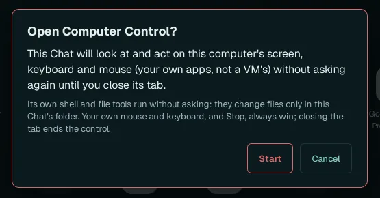
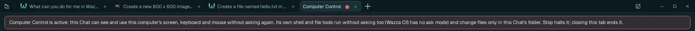
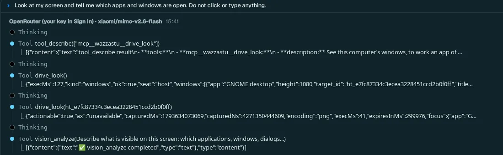

Computer Control
Computer Control is a Chat whose agent can see and use your own computer (not the VM): its screen, its keyboard and its mouse, in your own apps. It opens only after you allow it with your own click, and it stops as soon as you close its tab.
Every other Chat works in the VM, a separate computer, where an agent cannot harm your own files. Use Computer Control only for a task that must happen on your own computer, and watch it.
Open Computer Control#
Click + (Show apps), then Computer Control in Main apps (Screen control).
A card asks: Open Computer Control? Read it, then click Start. Cancel, Esc or a click outside the card closes it and nothing opens.

The tab then becomes the Computer Control Chat: its name has a red dot, and a red banner over the Chat says what is allowed:

What the consent covers#
| Allowed, without asking again | Not allowed |
|---|---|
| Looking at your computer's screen (every window you have open). | Anything in another tab: the consent is for this one Chat only. |
| Clicking, typing and pressing keys in your own apps. | Changing files outside this Chat's own folder with its shell and file tools. |
| Running its own shell and file tools, which change files only in this Chat's folder. | Going on after you close the tab, or after Wazza OS restarts. |
- Your own mouse and keyboard always win: if you move or type, your input goes first.
- Stop halts the agent's current turn at once.
- Closing the tab ends the control: the permission is withdrawn before the tab closes.
- After Wazza OS restarts, a restored Computer Control tab says Computer Control needs your consent again: Wazza OS restarted, so this Chat cannot see or use this computer until you allow it, with Allow… to show the card again.
Ask it something#
Write to it like any Chat. Pick a model that takes images (it works by looking at your screen); the model window is the same as every Chat's (Choose the agent and the model).

Good first requests: "look at my screen and tell me what is open (do not click)", "open the Files app and show me my Downloads folder", "in my desktop settings, turn on the dark style". Say what it must not do as clearly as what it must do. Describing a screen is not always right the first time: in the test above, the agent took the Wazza OS window for a browser; a stronger model sees better.
How it works, and its limits#
- It uses Drive on your computer's windows (the "host" seat) instead of the VM's: it lists your windows, looks at one or at the whole screen, then clicks and types.
- It runs on your computer, inside Wazza OS's sandbox: its shell and file tools are limited to its own folder.
It reaches the Internet and Wazza OS; services of your computer (
localhost) only when Local services is on. - Each Computer Control tab has its own permission: opening another one asks again.
- It sees the screen Wazza OS runs on: your desktop session, or, on a server, Wazza OS's own virtual screen (On a server).
See also Privacy and security.